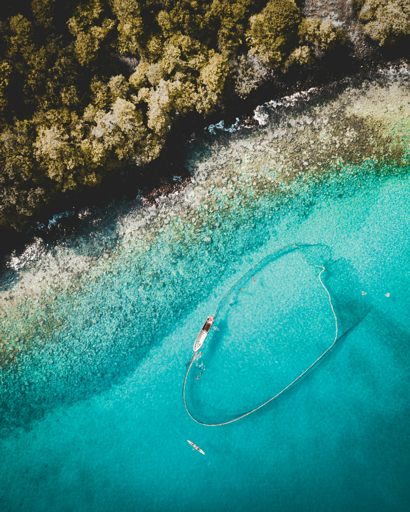
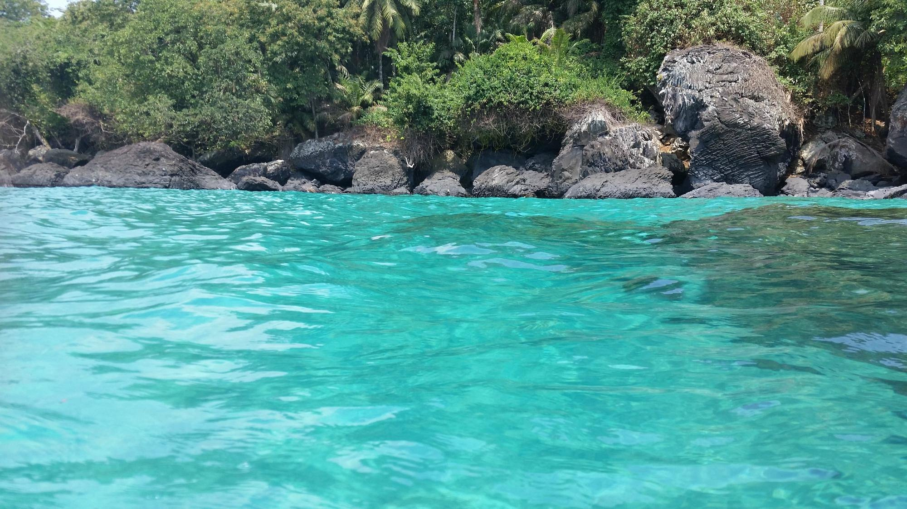
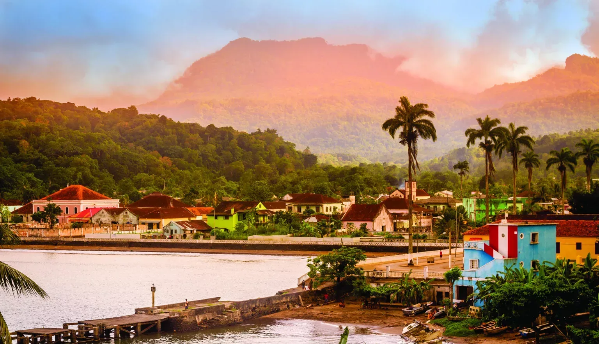
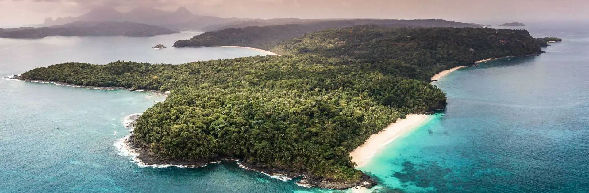

Le Sao Tomé-et-Principe en photo

Bateau de pêche au Sao Tomé-et-Principe. Photo de
João Ferreira
sur
Unsplash

Eau claire du Sao Tomé-et-Principe. Par @JLR1985 sur Tripadvisor

Village Santoméen.
(Source)

Vue aérienne de Sao Tomé-et-Principe
(Source)